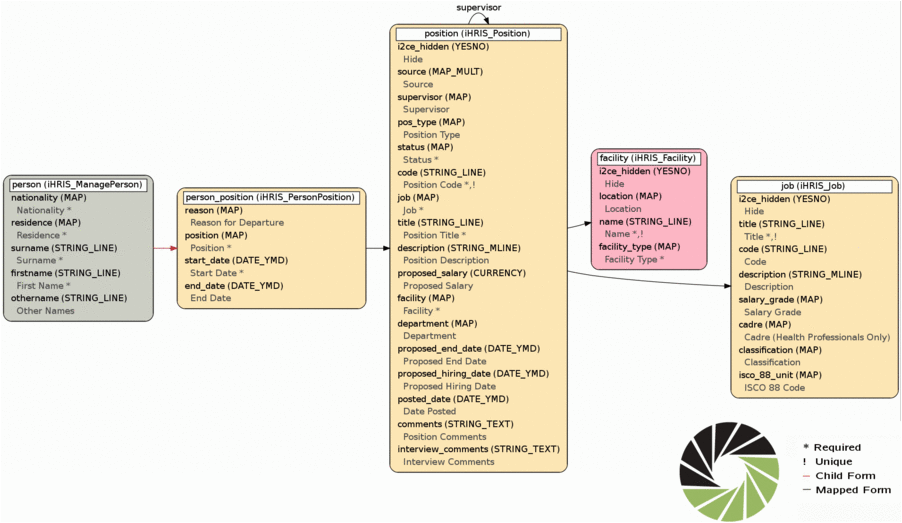
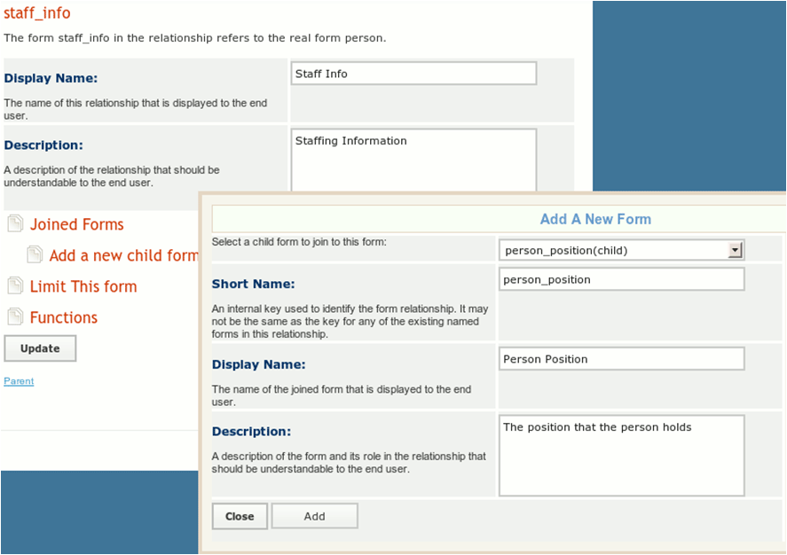
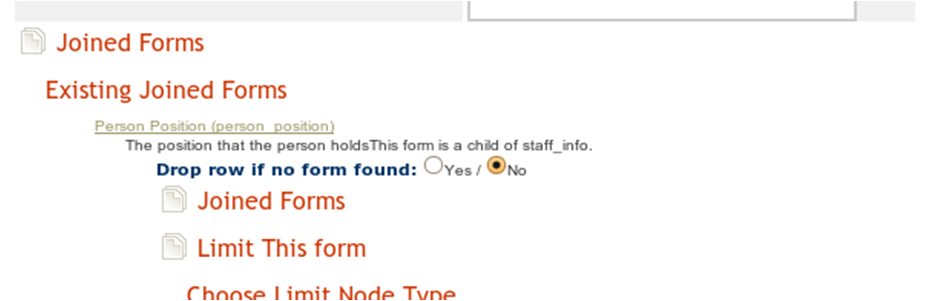
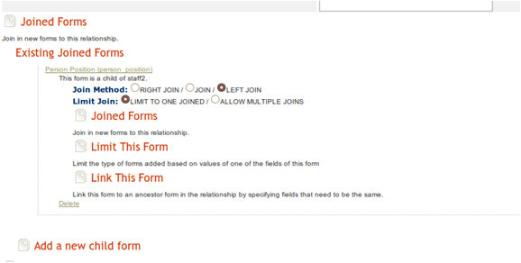
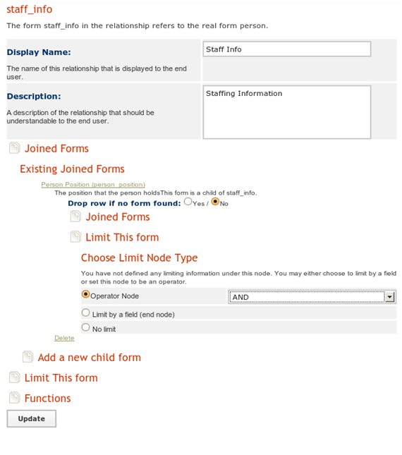
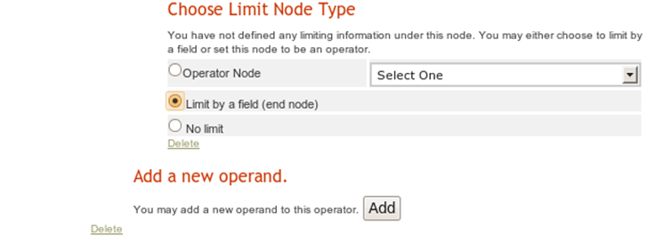
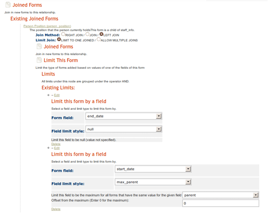
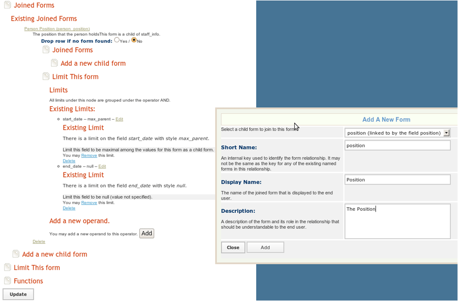

Custom Reports
iHRIS Administrator - Level I, © IntraHealth International, CC BY 4.0. Originally offered at hrhresourcecenter.org/elearning (CapacityPlus). Licence stated by its author, the folio owner, 2026-10-09.
1. Custom Reports
iHRIS has a custom reporting system to develop new reports based on the data in the system.
There is a data map that shows how all the data is related in the system.
Building a custom report is a three part process:
- create directions to navigate the data map (form relationship)
- determine what data to use from the map (report)
- display the selected data (report view)
2. Custom Reports
To create a custom staff info report for iHRIS Manage:
- create a custom form relationship "staff_info"
- choose the forms and how they are related to each other
- create a custom report "staff_report" based on the staff_info relationship
- choose the fields for the report from the relationship created above
- choose which fields to limit by for all the report views created from this report
- create a custom report view for the staff report
- various report views are intended for non-administrative users to view the data in the system
3. Custom Reports Example
Requirement: create a staff list with each person's cadre and facility.
Determine what data is needed and where it is stored.
Start with the form and field map.
See a video demonstration of this example in the box on the right.
4. Form Map
Taken from larger form and field map:
5. Form Relationships
To construct a form relationship, join forms by traversing the arrows of the form field map, both forward and backward.
There are two colors of arrows:
- Black arrows:
- the source of an arrow, formA, is related to the target of the arrow form, formB, via a mapped field
- if the arrow is not labeled, then the mapped field is also named formB, otherwise it is the label of the arrow
- although formA maps to at most one instance of formB, there may be many instances of formA mapping to formB
- to go backward on a black arrow, limit the joined form so that a unique form is chosen
- Red arrows:
- the source of an arrow, formA, is the parent of the target of the arrow, formB
- formA may have many instances of formB as a child form, but formB can only have one parent form
- to go forward on a red arrow, limit the child form so that a unique child form is chosen
6. (untitled page)
To make a report for the requirement in the example, include the following forms:
- facility: to find name of the facility
- job: to find the cadres
- person: although not explicitly stated as a requirement, assume that the names of the staff will aid in organizing the report
7. Connecting Forms
The data map does not have arrows that directly connect the facility, job, and person forms.
The forms must be connected:
- from"person" to "person_position"
- from "person_position" to "position"
- from "position", "facility" and "job" can be connected
8. Connecting Forms
In the example, there is one red arrow connecting "person" and "person_position," and the rest of the arrows are black.

9. Form Relationships
Once the forms and their connections are identified, you can build a form relationship called "staff_info."
You will use the primary form to traverse the form map.
You can choose where to start mapping, but choosing different primary forms will produce a different data set.
10. Form Relationships
There are several ways to build the form relationship (always clarify which option a user intended):
- option a: select "person" as the primary form—reports based on the relationship "staff_info" will contain everyone in the system whether or not they have a position
- option b: select "position" as the primary form—reports based on the relationship "staff_info" will only contain the people in the system that have a position and positions that have no people assigned to them
- option c: select "person_position" as the primary form—reports based on the relationship "staff_info" will only have currently filled positions
11. Form Relationships
For this example, choose option a, create a report relationship called "staff_info", and choose "person" as the primary form.
Select "Configure System" and then "Form Relationships".
Enter a display name and description and click "Update".
12. Form Relationships

13. Form Relationships
The "staff_info" relationship is now ready for editing:
- join "person_position" to "position“ by clicking "Joined Forms" then "Add a New Form"
- select "person_position (child)" as the form to add
- set the "short name" to person_position
- set a display name and description for this form
14. Form Relationships

15. Joined Forms
For iHRIS versions 4.0.8 or earlier, the screen should look like this:

16. Joined Forms
iHRIS version 4.0.9 introduced new functionality to the custom reporting system, so the screen should look like this:

Default options have the same effect in all versions.
17. Limiting Form Relationships
"person" to "person_position" traverses a red arrow forward
Limit the forms as there may be many "person_positions" associated with "person" in the example.
Limit "person_position" so that:
- the "end_date" is not null, to ensure the employee still holds this position
- the "start_date" is maximum start_date for all the person_position forms whose parent form is a person we are working with
18. Limiting Form Relationships
To limit the relationship, click "Joined Forms".
Select the form you just added, "Person Position" (person_position).
Choose "Limit This Form".
Since there are two limits to place on this form, set the "Operator Node" to "And."
19. Limiting Form Relationships

20. Limiting Form Relationships
Click "Update" and choose "Add A New Operand".
You will do this twice, once for the "start_date" and once for the "end_date".
Once the operands have been added, "Edit" each of them and "Limit By A Field".
Click "Update".

21. Limiting Form Relationships
For the "end_date" field:
- set the limit style to be "null"
- this means the end date has not been set
For the "start_date "field:
- make the limit style "max_parent"
- make this field the maximum for all (person_positoin) forms that have the same value for the field "parent"
- make the offset from the maximum "0"
22. Joining Forms
Join "position" to "person_position" as a linked form:
- click "Joined Forms" and "Add A New Child Form" underneath "person_position"
- do not specify limits here as you are traversing a black arrow in the correct direction
23. Joining Forms

24. Joining Forms
We will finish by joining "facility" form to the "position" form. You will also need to join the "job" form to the "position" form.
To do so, click "Joined Forms" and "Add A New Child Form" underneath "position".
Do not specify any limits here as you are traversing a black arrow in the correct direction.
25. Custom Reports Variations
Option A:
- The preceeding example limited the end_date to not null to get current positions only. Without the limit, the results would include the last position the person held, regardless of whether they currently hold it or not.
- If a person was assigned to more than one position at a time with the same start_date, then there will be a person_position for each of the positions, so that when the person_position form is joined it will choose one of person_position forms arbitrarily. If you expect that people can have more than one position, then you should choose option B.
- If you selected "Drop row if no form found" under the person_position form, then if a person did not have an associated person_position form, they would be removed from the report. Selecting to do so would make this a "Current Staff Report", rather than a "Person Report”.
26. Custom Reports Variations
Option B: Position Report
- select "Configure System" and "Form Relationships"
- create a report relationship called staff_info_b and choose "position" as the primary form,
- enter a display name and description and click update
-
edit the staff_info_b relationship:
-
join "facility" to "position" by the mapped field "position" or join "job" to "position" by the mapped field "job"
- join "person_position" to "position" via the "position" field
- this will traverse a black arrow backwards in the form field map, so add an "end_date" of null limit to choose a unique "person_position" form
- join "person" to "person_position" as its parent form (this will traverse a red arrow backwards, so there is no ambiguity about the form joining)
- choosing "Drop Row If No Form Found" when joining the person_position form produces only positions assigned to someone so that it becomes a filled positions report, and not a current positions report
27. Custom Reports Variations
Option C: Current Position Report
- select "Configure System" and "Form Relationships"
- create a report relationship called staff_info_c and choose "person_position" as the primary form
- enter a display name and description and click "Update"
-
edit the "staff_info_c" relationship:
-
limit the "person_position" form so that the "end_date" is null to only show current positions
- join "person" as the parent form of "person_position" (traversing a red arrow backward)
- join "position" to "person_position" via the mapped field position (traversing a black arrow forward)
- join "job" and "facility" to the "position" form (traversing a black arrow forward)
- if you chose not to use the limit "end_date" is null, the report would show the history of any position which has been filled
28. Custom Report
To create a custom report from the relationship “staff_info”:
- go to "Configure System" and "Reports"
- create a new report called staff_report based on the staff_info relationship
- this will create a zebra_staff_report table in the database that is populated from the form cache tables:
- hippo_job
- hippo_person_position
- hippo_position
- hippo_person
- hippo_facility
29. Report Views
A "report view" is a way of displaying some of the data/fields in a report:
- Paginated HTML Table
- Excel / CSV export
- XML Export
- Flash Charts
Limits in a report view are set in the report.
Each report view can have a default display.
30. Report Views
Go to "Configure System" and "Report Views" and choose to create a new report view based on "staff_report".
Select the fields to display.
To choose limits for the report views and its fields:
- click "Reporting Forms" and "Fields" to enable or disable fields from the relationship to include in the report
- change the header text for the field and set the limits for the field
Source
Lesson in Section 3 of iHRIS Administrator - Level I, Moodle course module cm-56; library/ihris-admin-course/modules/cm-56.md.